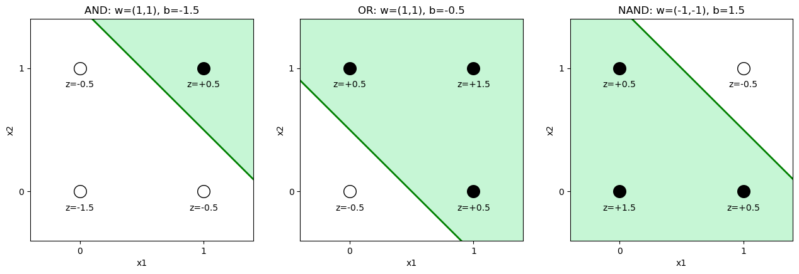

import torch
import warnings
warnings.filterwarnings('ignore')
import matplotlib.pyplot as plt
import numpy as np
torch.manual_seed(0)
# The four corners of the unit square are our whole "dataset" for both logic functions
X = torch.tensor([[0., 0.], [0., 1.], [1., 0.], [1., 1.]])
y_and = torch.tensor([0., 0., 0., 1.])
y_xor = torch.tensor([0., 1., 1., 0.])Session 7 — Linear models, gradient descent, and the XOR problem
This notebook follows the argument of the Session 7 page, and its section numbers are the page’s:
- Learning weights: a least-squares solver and gradient descent find the same line.
- What one weighted sum can do: AND, OR and NAND with the page’s weights, every corner computed, and AND learned by gradient descent.
- What it can never do: the same model trained on XOR gives up, and a search over thousands of weights finds none that work.
- Why a hidden layer helps: the page’s two-layer network computed step by step; a small network learns XOR, with the shape of every tensor printed; without its nonlinear activation it fails again.
- Changing the input, and a real protein: one engineered feature makes XOR linear; HBB’s per-residue secondary structure against its composition.
No training-loop abstractions are used on purpose: Session 8 introduces nn.Module and the idiomatic training loop. Here, the mechanics are the point.
2. Learning weights: linear regression, two ways
Before perceptrons, one more contrast on the simplest possible model. Ordinary linear regression has a direct numerical solution (least squares), so the same weights can be found two ways: solved for directly, or learned iteratively by gradient descent. Both should agree. (np.linalg.lstsq solves least squares with stable numerical methods; the textbook formula with an explicit matrix inverse, the normal equations, is on the page as optional reading.)
x_reg = np.array([1., 2., 3., 4., 5.])
y_reg = np.array([2.1, 3.9, 6.2, 7.8, 10.1])
# --- direct solution: least squares ---
X_reg = np.column_stack([np.ones_like(x_reg), x_reg])
beta_direct, *_ = np.linalg.lstsq(X_reg, y_reg, rcond=None)
print("least squares b0, b1:", np.round(beta_direct, 4))
# --- gradient descent on the exact same data ---
b0, b1 = 0.0, 0.0
lr = 0.01
for _ in range(20000):
pred = b0 + b1 * x_reg
err = pred - y_reg
grad_b0 = 2 * np.mean(err)
grad_b1 = 2 * np.mean(err * x_reg)
b0 -= lr * grad_b0
b1 -= lr * grad_b1
print("gradient descent b0, b1:", np.round([b0, b1], 4))least squares b0, b1: [0.05 1.99]
gradient descent b0, b1: [0.05 1.99]Same answer, found two different ways: the least-squares solver finds the minimum directly; gradient descent gets there gradually, step by step. Session 5’s PSSM weights are “derived” in this direct spirit (counted from alignment statistics); a perceptron’s classification loss has no direct solution, which is why the rest of this notebook learns its weights by gradient descent.
3. What one weighted sum can do
A single perceptron with a step activation implements AND, OR and NAND with hand-chosen weights: each is one straight boundary through the square of four inputs. The cell below uses exactly the weights of the page’s table and prints \(z\) and the output for every corner. Then gradient descent learns AND by itself.
def hand_perceptron(w1, w2, b, x1, x2):
z = w1 * x1 + w2 * x2 + b
return 1 if z > 0 else 0
corners = [(0, 0), (0, 1), (1, 0), (1, 1)]
gates = {
"AND": (1, 1, -1.5),
"OR": (1, 1, -0.5),
"NAND": (-1, -1, 1.5),
}
targets = {
"AND": [0, 0, 0, 1],
"OR": [0, 1, 1, 1],
"NAND": [1, 1, 1, 0],
}
for name, (w1, w2, b) in gates.items():
print(f"{name}: z = {w1:+d}*x1 {w2:+d}*x2 {b:+.1f}")
print(" x1 x2 z output")
for x1, x2 in corners:
z = w1 * x1 + w2 * x2 + b
print(f" {x1:2d} {x2:2d} {z:+5.1f} {hand_perceptron(w1, w2, b, x1, x2)}")
outputs = [hand_perceptron(w1, w2, b, x1, x2) for x1, x2 in corners]
print(f" matches the {name} truth table {targets[name]}: {outputs == targets[name]}\n")AND: z = +1*x1 +1*x2 -1.5
x1 x2 z output
0 0 -1.5 0
0 1 -0.5 0
1 0 -0.5 0
1 1 +0.5 1
matches the AND truth table [0, 0, 0, 1]: True
OR: z = +1*x1 +1*x2 -0.5
x1 x2 z output
0 0 -0.5 0
0 1 +0.5 1
1 0 +0.5 1
1 1 +1.5 1
matches the OR truth table [0, 1, 1, 1]: True
NAND: z = -1*x1 -1*x2 +1.5
x1 x2 z output
0 0 +1.5 1
0 1 +0.5 1
1 0 +0.5 1
1 1 -0.5 0
matches the NAND truth table [1, 1, 1, 0]: True
# The page's figure: each gate is one straight line, z = 0, with the output-1 corners on the side where z > 0
fig, axes = plt.subplots(1, 3, figsize=(13, 4.2))
xx, yy = np.meshgrid(np.linspace(-0.4, 1.4, 200), np.linspace(-0.4, 1.4, 200))
for ax, (name, (w1, w2, b)) in zip(axes, gates.items()):
ax.contourf(xx, yy, w1 * xx + w2 * yy + b > 0, levels=[-0.5, 0.5, 1.5], colors=["white", "#c6f6d5"])
xs = np.array([-0.4, 1.4])
ax.plot(xs, -(w1 * xs + b) / w2, color="green", lw=2) # the line w1*x1 + w2*x2 + b = 0
for x1, x2 in corners:
out = hand_perceptron(w1, w2, b, x1, x2)
ax.scatter(x1, x2, s=200, edgecolor="k", color="k" if out else "white", zorder=3)
ax.annotate(f"z={w1 * x1 + w2 * x2 + b:+.1f}", (x1, x2), xytext=(0, -22), textcoords="offset points",
ha="center")
ax.set_title(f"{name}: w=({w1},{w2}), b={b}")
ax.set_xlim(-0.4, 1.4); ax.set_ylim(-0.4, 1.4); ax.set_aspect("equal")
ax.set_xticks([0, 1]); ax.set_yticks([0, 1]); ax.set_xlabel("x1"); ax.set_ylabel("x2")
plt.tight_layout()
plt.show()
AND, learned by gradient descent
def train_linear(X, y, lr=0.5, epochs=300, track_every=50):
w = torch.zeros(2, requires_grad=True)
b = torch.zeros(1, requires_grad=True)
losses = []
for epoch in range(epochs):
z = X @ w + b
pred = torch.sigmoid(z)
loss = torch.nn.functional.binary_cross_entropy(pred, y)
loss.backward()
with torch.no_grad():
w -= lr * w.grad
b -= lr * b.grad
w.grad.zero_()
b.grad.zero_()
if epoch % track_every == 0:
losses.append(loss.item())
with torch.no_grad():
final_pred = torch.sigmoid(X @ w + b)
return w.detach(), b.detach(), losses, final_pred
w_and, b_and, losses_and, pred_and = train_linear(X, y_and)
print("learned weights:", w_and.numpy(), "bias:", b_and.numpy())
print("target: ", y_and.numpy())
print("predicted: ", np.round(pred_and.numpy(), 3))learned weights: [3.7240057 3.7240057] bias: [-5.786265]
target: [0. 0. 0. 1.]
predicted: [0.003 0.113 0.113 0.84 ]The predictions land close to 0 for the three “false” corners and close to 1 for (1,1) — the linear model finds a straight line that separates AND’s two classes without any trouble, as Session 1’s perceptron discussion would predict for a linearly separable function.
4. What it can never do: XOR
w_xor, b_xor, losses_xor, pred_xor = train_linear(X, y_xor, epochs=2000)
print("learned weights:", w_xor.numpy(), "bias:", b_xor.numpy())
print("target: ", y_xor.numpy())
print("predicted: ", np.round(pred_xor.numpy(), 3))
print("final loss: ", round(losses_xor[-1], 4), " (ln(2) =", round(np.log(2), 4), "— i.e. no better than guessing 0.5 for everything)")learned weights: [0. 0.] bias: [0.]
target: [0. 1. 1. 0.]
predicted: [0.5 0.5 0.5 0.5]
final loss: 0.6931 (ln(2) = 0.6931 — i.e. no better than guessing 0.5 for everything)Every prediction converges to exactly 0.5 — the model has given up and is guessing. No choice of two weights and a bias can separate XOR’s diagonal pattern with a straight line, so gradient descent has nowhere better to go. This is the same limitation Bulyk, Johnson & Church (2002) documented for real transcription-factor binding sites: a linear/profile score cannot represent an effect that depends on the combination of two positions rather than each independently.
The page asks you to try to find weights for XOR by hand. The cell below tries for you: every combination of \(w_1\), \(w_2\) and \(b\) on a grid from −3 to 3 in steps of 0.1, over 200,000 perceptrons, and counts how many reproduce each truth table.
grid = np.round(np.arange(-3, 3.01, 0.1), 1)
W1, W2, B = np.meshgrid(grid, grid, grid, indexing="ij")
corners_np = np.array(corners)
# outputs of every perceptron on the grid, at all four corners: shape (61, 61, 61, 4)
out = ((W1[..., None] * corners_np[:, 0] + W2[..., None] * corners_np[:, 1] + B[..., None]) > 0).astype(int)
tables = {**targets, "XOR": [0, 1, 1, 0]}
print(f"{W1.size:,} perceptrons tried")
for name, target in tables.items():
print(f" {name:5s} {target}: reproduced by {int((out == target).all(axis=-1).sum()):,} of them")226,981 perceptrons tried
AND [0, 0, 0, 1]: reproduced by 5,012 of them
OR [0, 1, 1, 1]: reproduced by 9,455 of them
NAND [1, 1, 1, 0]: reproduced by 4,467 of them
XOR [0, 1, 1, 0]: reproduced by 0 of themThousands of weight choices implement AND, OR or NAND: any line that cuts off the right corners will do. Not a single one implements XOR, as the page’s geometric argument (and the optional proof) says.
6a. Changing the input instead
A hidden layer isn’t the only way to rescue a linear model on XOR: a better input works too. For 0/1-valued inputs, \(\text{XOR}(x_1, x_2) = x_1 + x_2 - 2 x_1 x_2\) exactly – so adding \(x_1 x_2\) as a third input turns XOR back into something an ordinary linear model (even plain linear regression, not a perceptron) can fit exactly.
X_xor_raw = np.array([[0., 0.], [0., 1.], [1., 0.], [1., 1.]])
y_xor_np = np.array([0., 1., 1., 0.])
# engineer the interaction feature by hand
interaction = X_xor_raw[:, 0] * X_xor_raw[:, 1]
X_xor_engineered = np.column_stack([X_xor_raw, interaction])
weights_by_hand = np.array([1., 1., -2.])
bias_by_hand = 0.
pred_engineered = X_xor_engineered @ weights_by_hand + bias_by_hand
print("inputs (x1, x2, x1*x2):")
print(X_xor_engineered)
print("predicted:", pred_engineered)
print("target: ", y_xor_np)
print("exact match:", np.allclose(pred_engineered, y_xor_np))inputs (x1, x2, x1*x2):
[[0. 0. 0.]
[0. 1. 0.]
[1. 0. 0.]
[1. 1. 1.]]
predicted: [0. 1. 1. 0.]
target: [0. 1. 1. 0.]
exact match: TrueAn exact fit, with plain linear weights \((1, 1, -2)\) and zero bias – once someone has already noticed that \(x_1 x_2\) is the feature that matters. The model did not change; only the input did. That “someone has to notice” is the catch: for Bulyk et al.’s real transcription-factor data, or for secondary structure, nobody knows the useful interaction terms in advance. A hidden layer’s advantage is that it learns features like this from data.
The lesson reaches beyond XOR: what a model can learn depends on what its input represents. No model, however large, can recover information the input does not contain. The lab makes the same point with real proteins.
6b. Two views of a real protein: HBB
A secondary-structure predictor has to label every residue. Fetch the labels of HBB (beta-globin, chain B of the human hemoglobin crystal structure 2HHB) from EBI’s PDBe API, and compare two ways of presenting this protein to a model: a window of neighbouring residues (what PHD reads) and the 20 amino-acid fractions (what the lab uses).
import requests
base = "https://www.ebi.ac.uk/pdbe/api/pdb/entry"
entry = requests.get(f"{base}/secondary_structure/2hhb", timeout=10).json()["2hhb"]
molecules = requests.get(f"{base}/molecules/2hhb", timeout=10).json()["2hhb"]
# HBB (beta-globin) is chain B; its sequence comes from the structure itself
seq = next(m["sequence"] for m in molecules if "B" in m.get("in_chains", []) and m.get("length"))
chain = next(c for m in entry["molecules"] for c in m["chains"] if c["chain_id"] == "B")
helices = chain["secondary_structure"]["helices"]
strands = chain["secondary_structure"].get("strands", [])
labels = ["C"] * len(seq) # C = coil, H = helix
for h in helices:
for r in range(h["start"]["residue_number"], h["end"]["residue_number"] + 1):
labels[r - 1] = "H"
labels = "".join(labels)
print("View 1, per residue: the sequence and the label a predictor must produce")
for start in range(0, len(seq), 50):
print(f"{start + 1:4d} {seq[start:start + 50]}")
print(f" {labels[start:start + 50]}")
print(f"\n{labels.count('H')} of {len(seq)} residues in a helix ({labels.count('H') / len(seq):.0%}), "
f"{len(strands)} strands")
centre, half = 63, 6 # a PHD-style window of 13 residues around His63
window = seq[centre - 1 - half:centre + half]
print(f"\nPHD-style input for residue {centre} ({seq[centre - 1]}): the window {window}, "
f"target label {labels[centre - 1]}")
aas = "ACDEFGHIKLMNPQRSTVWY"
composition = [seq.count(a) / len(seq) for a in aas]
print("\nView 2, the lab's input: 20 fractions, the same for any order of these residues")
print(" " + " ".join(f"{a}:{f:.3f}" for a, f in zip(aas, composition)))
print(f" and one target: helix fraction = {labels.count('H') / len(seq):.2f}")
assert len(strands) == 0 and labels.count("H") == 117 and len(seq) == 146View 1, per residue: the sequence and the label a predictor must produce
1 VHLTPEEKSAVTALWGKVNVDEVGGEALGRLLVVYPWTQRFFESFGDLST
CCCCHHHHHHHHHHHCCCCHHHHHHHHHHHHHHHCHHHHHHCHHHCCCCC
51 PDAVMGNPKVKAHGKKVLGAFSDGLAHLDNLKGTFATLSELHCDKLHVDP
HHHHHHCHHHHHHHHHHHHHHHHHHCCHHHHHHHHHHHHHHHHHHCCCCC
101 ENFRLLGNVLVCVLAHHFGKEFTPPVQAAYQKVVAGVANALAHKYH
HHHHHHHHHHHHHHHHHHHHHCCHHHHHHHHHHHHHHHHHHHCCCC
117 of 146 residues in a helix (80%), 0 strands
PHD-style input for residue 63 (H): the window NPKVKAHGKKVLG, target label H
View 2, the lab's input: 20 fractions, the same for any order of these residues
A:0.103 C:0.014 D:0.048 E:0.055 F:0.055 G:0.089 H:0.062 I:0.000 K:0.075 L:0.123 M:0.007 N:0.041 P:0.048 Q:0.021 R:0.021 S:0.034 T:0.048 V:0.123 W:0.014 Y:0.021
and one target: helix fraction = 0.80View 1 keeps what matters for each label: which residues are neighbours, in what order, and where helices start and stop. View 2 keeps only counts. A model given view 2 can at best predict the overall fraction; it can never say which residues are helical. The lab builds exactly such a model on 55 proteins.